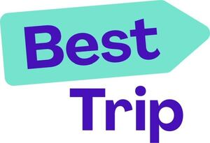

Trade Mark Journal No.2026/003 16 January 2026
WO0000001836221 (9,16,35,36,39,41,42,43)
Office of origin: Russian Federation
Date of International Registration:7 November 2024
Date of designation in the UK:
7 November 2024

The mark contains the colours blue, light turquoise and white.
- Class 9
- 3D spectacles; DVD players; breathing apparatus for underwater swimming; telephone apparatus; ear plugs for divers; binoculars; encoded identification bracelets, magnetic; video baby monitors; hands-free kits for telephones; headsets for playing video games; dive skins; holograms; holders adapted for mobile telephones and smartphones; electronic interactive whiteboards; electronic notice boards; life jackets; reflective safety vests; nose clips for divers and swimmers; downloadable emoticons for mobile phones; eyewear; reflective articles for wear, for the prevention of accidents; riding helmets; electronic book readers; electronic agendas; dashboard mats adapted for holding mobile telephones and smartphones; directional compasses; marine compasses; computers; diving suits; magnets; decorative magnets; divers' masks; portable media players; digital weather stations; monitors [computer hardware]; monitors [computer programs]; data sets, recorded or downloadable; sound recording carriers; magnetic data media; downloadable application software for virtual environments; computer game software, recorded; downloadable computer software for managing crypto asset transactions using blockchain technology; software as a medical device [SaMD], downloadable; computer hardware; spectacle frames; spectacles; anti-glare glasses; sunglasses; goggles for sports; biometric passports; electronic pocket translators; gloves for divers; data gloves; computer software platforms, recorded or downloadable; protective films adapted for computer screens; protective films adapted for smartphones; sound recording strips; mobile phone screen protectors; stands adapted for laptops; in-car telephone handset cradles; personal digital assistants [PDAs]; weight belts for divers; life belts; fuses; downloadable computer software applications for minting non-fungible tokens [NFTs]; computer programs, recorded; computer game software, downloadable; computer operating programs, recorded; computer screen saver software, recorded or downloadable; walkie-talkies; security surveillance robots; teaching robots; telepresence robots; user-programmable humanoid robots, not configured; humanoid robots with artificial intelligence for preparing beverages; humanoid robots having communication and learning functions for assisting and entertaining people; signalling whistles; sports whistles; nets for protection against accidents; fire alarms; signals, luminous or mechanical; sirens; electronic access control systems for interlocking doors; autonomous navigation systems for ships; scanners for data processing; hand-held electronic dictionaries; smart speakers; integrated circuit cards [smart cards]; smartglasses; smartphones; foldable smartphones; smartwatches; audiovisual teaching apparatus; charging stations for electric vehicles; radiotelegraphy sets; radiotelephony sets; spectacle lenses; optical glass; personal stereos; bags adapted for laptops; parking meters; mileage recorders for vehicles; cordless telephones; mobile telephones; ticket dispensing terminals, electronic; credit card terminals; interactive touchscreen terminals; point-of-sale [POS] terminals; self-checkout terminals; transponders; resuscitation training simulators; vehicle breakdown warning triangles; headgear being protective helmets; baby monitors; railway traffic safety appliances; data processing apparatus; theft prevention installations, electric; mobile phone chargers; acoustic alarms; life-saving apparatus and equipment; couplers [data processing equipment]; wearable activity trackers; anti-theft warning apparatus; computer peripheral devices; acoustic couplers; alarms; fog signals, nonexplosive; rescue flares, non-explosive and non-pyrotechnic; whistle alarms; readers [data processing equipment]; electric and electronic effects units for musical instruments; bar code readers; head-up display apparatus for vehicles; downloadable ring tones for mobile phones; downloadable image files; downloadable music files; downloadable digital music files authenticated by nonfungible tokens [NFTs]; downloadable digital image files authenticated by nonfungible tokens [NFTs]; animated cartoons; USB flash drives; magic lanterns; signal lanterns; optical lanterns; cameras [photography]; digital photo frames; containers for contact lenses; contact lens cases incorporating ultrasonic cleaning functions; spectacle cases; cases for smartphones; cases especially made for photographic apparatus and instruments; home automation hubs; spectacle chains; time clocks [time recording devices]; sleeves for laptops; covers for personal digital assistants [PDAs]; covers for tablet computers; covers for smartphones; cases for smartphones incorporating a keyboard; virtual reality headsets; protective helmets; protective helmets for sports; neural helmets, not for medical purposes; head guards for sports; lifeboats; cell phone straps; spectacle cords; tripods for cameras; downloadable graphics for mobile phones.
- Class 16
- Fountain pens; aquarelles; albums; almanacs; atlases; banners of paper; paper bows, other than haberdashery or hair decorations; name badges [office requisites]; table linen of paper; tickets; baggage claim check tags of paper; tags for index cards; forms, printed; announcement cards [stationery]; glitter for stationery purposes; note books; drawing pads; pads [stationery]; wristbands for the retention of writing instruments; pamphlets; booklets; paper; wrapping paper; blotters; signboards of paper or cardboard; bunting of paper; newspapers; terrestrial globes; engravings; slate pencils; document holders [stationery]; pencil holders; penholders; page holders; holders for cheque books; holders for stamps [seals]; name badge holders [office requisites]; diagrams; adhesive tape dispensers [office requisites]; magnetic boards being office requisites; cream containers of paper; correcting fluids [office requisites]; magazines [periodicals]; money clips; clips for name badge holders [office requisites]; pen clips; bookmarks; periodicals; printed publications; graphic representations; calendars; tracing patterns; pencils; pencil lead holders; pictures; transfers [decalcomanias]; paintings [pictures], framed or unframed; colouring pictures; cardboard; wood pulp board [stationery]; cards; trading cards, other than for games; catalogues; paintbrushes; painters' brushes; writing brushes; books; colouring books; manifolds [stationery]; comic books; mats of paper for beer glasses; desk mats; tablemats of paper; envelopes [stationery]; boxes of paper or cardboard; printed coupons; erasers; paper ribbons, other than haberdashery or hair decorations; flyers; absorbent sheets of paper or plastic for foodstuff packaging; humidity control sheets of paper or plastic for foodstuff packaging; viscose sheets for wrapping; sheets of reclaimed cellulose for wrapping; architects' models; graphic prints; teaching materials [except apparatus]; packing [cushioning, stuffing] materials of paper or cardboard; bags [envelopes, pouches] of paper or plastics, for packaging; painters' easels; bibs of paper; stickers [stationery]; writing cases [stationery]; writing cases [sets]; printed sheet music; passport holders; covers [stationery]; protective covers for books; musical greeting cards; greeting cards; postcards; folders for papers; pastels [crayons]; pen cases; posters; clipboards; plastic bubble film for wrapping; plastic film for wrapping; transparencies [stationery]; coasters of paper; bookends; stands for pens and pencils; stamp stands; face towels of paper; towels of paper; writing materials; writing instruments; printed matter; lithographic works of art; prospectuses; printed timetables; indexes; drawing pens; marking pens [stationery]; tissue paper; tissues of paper for removing make-up; paper wipes for cleaning; place mats of paper; table napkins of paper; tablecloths of paper; paper-clips; clips for offices; carrier bags of paper or plastic; writing or drawing books; stationery; pencil sharpeners, electric or non-electric; stencil plates; stencils for decorating food and beverages; plastic blister packs for packaging; bottle wrappers of paper or cardboard; manuals [handbooks]; figurines of papier mâché; paper coffee filters; flags of paper; flip charts; photo-engravings; photographs [printed]; stencil cases; canvas for painting; stencils; stencils [stationery]; advertisement boards of paper or cardboard; shields [paper seals]; prints [engravings]; labels of paper or cardboard; instructional and teaching materials; artists' materials; stationery and office requisites, except furniture; packing cardboard; packaging material made of starches; drawing materials; sketching materials.
- Class 35
- Computerized file management; demonstration of goods; opinion polling; business management and organization consultancy; business organization consultancy; business management consultancy; marketing; marketing in the framework of software publishing; influencer marketing; marketing through product placement for others in virtual environments; targeted marketing; updating and maintenance of information in registries; updating and maintenance of data in computer databases; online retail services for downloadable ring tones; online retail services for downloadable and prerecorded music and movies; online retail services for downloadable digital music; organization of exhibitions for commercial or advertising purposes; arranging and conducting of commercial events; arranging newspaper subscriptions for others; arranging subscriptions to electronic toll collection [ETC] services for others; organization of trade fairs; payroll preparation; data search in computer files for others; sales prospecting for others; business partnership search; sponsorship search; business management assistance; commercial or industrial management assistance; providing business information; providing business information via a website; providing commercial and business contact information; providing telephone directory information; providing commercial information and advice for consumers in the choice of products and services; providing user reviews for commercial or advertising purposes; providing user rankings for commercial or advertising purposes; provision of an online marketplace for buyers and sellers of downloadable digital image files authenticated by non-fungible tokens [NFTs]; provision of an online marketplace for buyers and sellers of goods and services; presentation of goods on communication media, for retail purposes; media relations services; sales promotion for others; promotion of goods and services through sponsorship of sports events; promotion of goods through influencers; production of teleshopping programmes; consumer profiling for commercial or marketing purposes; publication of publicity texts; radio advertising; development of marketing concepts; development of advertising concepts; development of business organization strategies relating to corporate social responsibility; distribution of samples; dissemination of advertising matter; direct mail advertising; registration of written communications and data; advertising; outdoor advertising; online advertising on a computer network; advertising by mail order; pay per click advertising; television advertising; compilation of statistics; compilation of information into computer databases; systemization of information into computer databases; corporate communications services; negotiation of business contracts for others; business management of performing artists; interim business management; business management of sports people; outsourced administrative management for companies; business management of hotels; business management of reimbursement programmes for others; administration of frequent flyer programs; administrative processing of purchase orders; import export agency services; commercial information agency services; administrative services for the relocation of businesses; public relations; business consultancy services for digital transformation; advisory services for business management; lead generation services; online ordering services in the field of restaurant takeout and delivery; market intelligence services; appointment reminder services [office functions]; data processing services [office functions]; website traffic optimization; appointment scheduling services [office functions]; search engine optimization for sales promotion; retail services for works of art provided by art galleries; retail services relating to downloadable digital image files authenticated by non-fungible tokens [NFTs]; gift registry services; price comparison services; business intermediary services relating to the matching of various professionals with clients; reception services for visitors [office functions]; advertising services to create brand identity for others; procurement services for others [purchasing goods and services for other businesses]; shorthand; outsourcing services [business assistance]; telemarketing services; telephone answering for unavailable subscribers; telephone switchboard services; photocopying services; business efficiency expert services; business services; business advisory and information services; recruitment agency services; secretarial services; business evaluations; promoting the goods and services of others; office machines and equipment rental; commercial intermediation services; distribution of goods for advertising purposes; administration of the business affairs of franchises; business advisory services relating to the establishment of franchises; wholesale services for software; retail services for computer software.
- Class 36
- Rent collection; issuance of gift certificates; issuance of travellers' cheques; issuance of credit cards; issuance of prepaid vouchers; issuance of prepaid gift cards; capital investment; crowdfunding; financial management; processing of debit card payments; processing of credit card payments; organization of monetary collections; real estate appraisal; financial evaluation [insurance, banking, real estate]; electronic funds transfer; electronic funds transfer provided via blockchain technology; insurance brokerage; real estate brokerage; providing insurance information; providing rebates at participating establishments of others through use of a membership card; providing financial information; providing financial information via a website; charitable fund raising; financial sponsorship; life insurance underwriting; health insurance underwriting; accident insurance underwriting; fire insurance underwriting; marine insurance underwriting; apartment house management; real estate management; financial management of reimbursement payments for others; administration of financial affairs; car broker services; real estate agency services; stock brokerage services; real estate services; accommodation bureau services [apartments]; mobile banking services; online banking services rendered in virtual environments; e-wallet payment services; financing services; safe deposit services; surety services; provident fund services; savings bank services; financial customs brokerage services; mutual funds; deposits of valuables; rental of apartments; rental of real estate.
- Class 39
- Rental of atmospheric diving suits; rental of diving bells; rental of motor racing cars; garage rental; rental of aircraft engines; rental of safety seats for children, for vehicles; rental of photography drones; rental of surveillance drones; railway coach rental; rental of storage containers; rental of wheelchairs; rental of vehicle roof racks; rental of freezers; rental of security drones; rental of warehouses; rental of tractors; refrigerator rental; rental of storage lockers; rental of electric wine cellars; towing; vehicle breakdown towing services; water distribution; water supplying; delivery of newspapers; message delivery; delivery of goods; delivery of goods by mail order; parcel delivery; flower delivery; replenishment of vending machines; launching of satellites for others; transportation logistics; cloakroom services; rescue operations [transport]; locating and tracking of cargo for transportation purposes; locating and tracking of people for transportation purposes; armoured-car transport; hauling; carting; transport and storage of waste; transporting furniture; lighterage services; removal services; guarded transport of valuables; ambulance transport; porterage; piloting of civilian drones; refloating of ships; cash replenishment of automated teller machines; shipbrokerage; freight brokerage [forwarding (Am.)]; transport brokerage; stevedoring; unloading cargo; electricity distribution; distribution of energy; packaging of goods; collection of domestic and industrial waste and trash; collection of recyclable goods [transport]; ice-breaking; transport of captured carbon dioxide for others; transport by pipeline; wrapping of goods; operating canal locks; car park services; car subscription services; chauffeur services; courier services [messages or merchandise]; salvaging; salvage of ships; services for transporting legal documents; gift wrapping; bottling services; underwater salvage; luggage storage; franking of mail; freight [shipping of goods]; freighting; physical storage of electronically stored data or documents; storage of captured carbon dioxide for others; temporary storage of keys; boat storage; storage of goods; storage; freight forwarding; distribution [delivery of goods] providing information relating to storage services.
- Class 41
- Academies [education]; rental of audio equipment; rental of video cameras; rental of video cassette recorders; rental of show scenery; rental of sound recordings; toy rental; rental of cinematographic apparatus; rental of motion pictures; rental of indoor aquaria; games equipment rental; rental of stadium facilities; rental of artwork; rental of skin diving equipment; rental of sports equipment, except vehicles; rental of sports grounds; rental of tennis courts; rental of training simulators; rental of electronic book readers; rental of humanoid robots having communication and learning functions for entertaining people; mobile library services; lending library services; booking of seats for shows; videotaping; physical education; production of music; discotheque services; dubbing; publication of books; research in the field of education; escape room [entertainment]; film distribution; health club services [health and fitness training]; layout services, other than for advertising purposes; screenplay writing; music education; religious education; teaching; aikido instruction; gymnastic instruction; judo instruction; correspondence courses; practical training [demonstration]; training services provided via simulators; organization of balls; organization of exhibitions for cultural or educational purposes; providing recreation facilities; arranging and conducting of colloquiums; arranging and conducting of congresses; arranging and conducting of conferences; arranging and conducting of concerts; arranging and conducting of workshops [training]; arranging and conducting of in-person educational forums; arranging and conducting of entertainment events; arranging and conducting of seminars; arranging and conducting of symposiums; arranging and conducting of sports events; organization of competitions [education or entertainment]; arranging of beauty contests; organization of cosplay entertainment events; organization of fashion shows for entertainment purposes; organization of electronic sports competitions; organization of shows [impresario services]; organization of sports competitions; vocational guidance [education or training advice]; amusement park services; transfer of business knowledge and know-how [training]; know-how transfer [training]; vocational retraining; directing of shows; providing online videos, not downloadable; providing online virtual guided tours; providing information in the field of education; providing information relating to recreational activities; providing information in the field of entertainment; providing online music, not downloadable; providing television programmes, not downloadable, via video-on-demand services; providing films, not downloadable, via video-on-demand services; providing facilities for playing Live Action Role Playing [LARP] games; providing online images, not downloadable; providing user reviews for entertainment or cultural purposes; providing golf facilities; providing user rankings for entertainment or cultural purposes; providing sports facilities; providing amusement arcade services; cinema presentations; providing online electronic publications, not downloadable; presentation of circus performances; presentation of variety shows; presentation of live performances; theatre productions; presenting museum exhibitions; conducting guided climbing tours; conducting fitness classes; educational examination; production of podcasts; film production, other than advertising films; rental of videotapes; electronic desktop publishing; online publication of electronic books and journals; writing of texts; sado instruction [tea ceremony instruction]; zoological garden services; news reporters services; film directing, other than advertising films; party planning [entertainment]; captioning; subtitling; sign language interpretation; tutoring; entertainer services; holiday camp services [entertainment]; gambling services; e-sports services; conducting guided tours; video editing services for events; video imaging services by drone; disc jockey services; sound engineering services for events; game services provided online from a computer network; games library services; personal trainer services [fitness training]; providing casino facilities [gambling]; calligraphy services; karaoke services; movie studio services; songwriting; cultural, educational or entertainment services provided by art galleries; multimedia library services; modelling for artists; nightclub services [entertainment]; educational services provided by schools; orchestra services; simulated travel services provided in virtual environments for entertainment purposes; scriptwriting, other than for advertising purposes; educational assistance services for persons with individual needs; physical fitness assessment services for training purposes; face painting; ticket agency services [entertainment]; music composition services; entertainment services; entertainment services provided in virtual environments; coaching [training]; lighting technician services for events; sport camp services; recording studio services; photographic imaging services by drone; nursery schools; photography; photographic reporting; timing of sports events; production of shows.
- Class 42
- Computer system analysis; rental of web servers; rental of computer software; computer rental; rental of data centre facilities; rental of userprogrammable humanoid robots, not configured; blockchain as a service [BaaS]; recovery of computer data; business card design; graphic design of promotional materials; interior design; industrial design; graphic arts design; computer virus protection services; engineering; installation of computer software; material testing; research and development of new products for others; scientific and technological research in the field of natural disasters; scientific research; scientific research in the field of environmental protection; underwater exploration; research in the field of excavation; technological research; website design consultancy; computer security consultancy; artificial intelligence consultancy; computer technology consultancy; consultancy in the design and development of computer hardware; internet security consultancy; computer software consultancy; technological consultancy; quality control; vehicle roadworthiness testing; mining of crypto assets; updating of computer software; monitoring of computer systems to detect breakdowns; monitoring of computer systems for detecting unauthorized access or data breach; electronic monitoring of credit card activity to detect fraud via the internet; monitoring of computer system operation by remote access; electronic monitoring of personally identifying information to detect identity theft via the internet; writing of computer code; software as a service [SaaS]; maintenance of computer software; design of show scenery; design of interior decor; urban planning; platform as a service [PaaS]; providing virtual computer systems through cloud computing; providing online geographic maps, not downloadable; providing geographic information; providing information relating to computer technology and programming via a website; providing online non-downloadable computer software; providing online non-downloadable computer software for minting non-fungible tokens [NFTs]; providing search engines for the internet; conversion of computer programs and data, other than physical conversion; conducting technical project studies; computer programming of smart contracts on a blockchain; computer system design; golf course design; rental of smartglasses; design of prototypes; unlocking of mobile phones; hosting computer websites; development of video and computer games; development of computer platforms; computer software design; archaeological excavation; information technology [IT] support services [troubleshooting of software]; creating and designing website-based indexes of information for others [information technology services]; creating and maintaining websites for others; computer graphic design for video projection mapping; design of computer-simulated models; computer programming; technical writing; duplication of computer programs; computer programming services for data processing; user authentication services using single sign-on technology for online software applications; cartographic or thermographic measurement services by drone; logo design services; styling [industrial design]; cartography services; software engineering services for data processing; hosting virtual environments; hosting software platforms for virtual reality-based work collaboration; server hosting; electronic data storage.
- Class 43
- Rental of drinking water dispensers; rental of cooking apparatus; rental of kitchen sinks; rental of furniture; rental of lighting apparatus; rental of office furniture; rental of tents; rental of transportable buildings; rental of portable dressing rooms; rental of meeting rooms; rental of robots for preparing beverages; rental of chairs, tables, table linen, glassware; information and advice in relation to the preparation of meals; boarding for animals; temporary accommodation provided by halfway houses; food sculpting; decorating of food; cake decorating; bar services; ghost kitchen services; day-nursery [crèche] services; retirement home services; hookah lounge services; snack-bar services; café services; cafeteria services; personal chef services; food reviewing services [provision of information about food and drinks]; food and drink catering; reception services for temporary accommodation [conferment of keys]; animal pound services; restaurant services; washoku restaurant services; udon and soba restaurant services; take-away restaurant services; self-service restaurant services; canteen services.
Limited Liability Company "DATAUNIVERSE"
Representative: Beck Greener LLP, Fulwood House, 12 Fulwood Place London WC1V 6HR UNITED KINGDOM